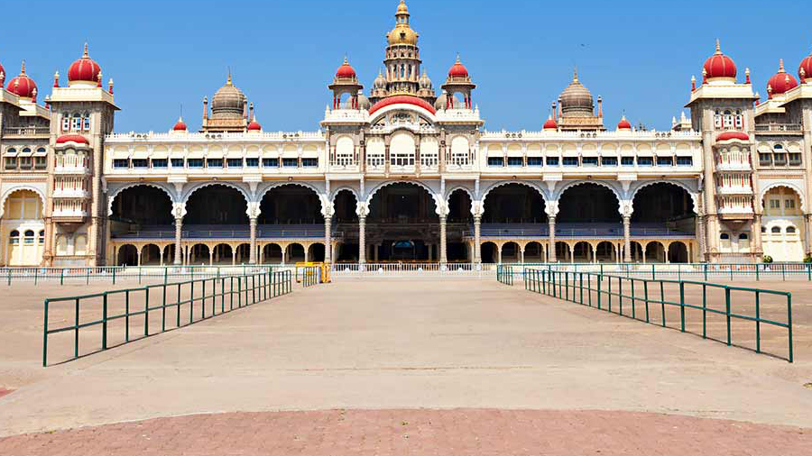

FACILITIES FOR VISITORS

Facilities
- Clean Environment
- Braille Guide for Visually Challenged Tourists
- Govt approved Guides to provide information to Tourists inside Mysuru Palace
- Battery Operated Vehicle
- Photography without Flash is allowed
- Sound and Light Program regarding History of Mysuru Palace / Wodeyar Dynasty (Latest info on Notice Board)
- Free BSNL Wifi to Tourists
- Free Cycle Facility for Tourists to cycle inside Palace to see the garden and temples
- Free Umbrella Facility for Tourists to avoid rains or bright sun.
- Free Wheel Chair Facility.
- Free Stand for Footwear
- Hygenic Toilet Facility
- Drinking Water Facility
- Parking Facility for Vehicles at Varaha Gate and Ambavilas Gate
- Post Card Photographs of Mysuru Palace for Sale
- Guide Book In Kannada, English and Hindi are available for sale
- Health Kiosk and Baby Care Centre at Mysuru Palace Premises
- For Emergency Security at Palace +91 821 2430 404
- First Aid-Kit available